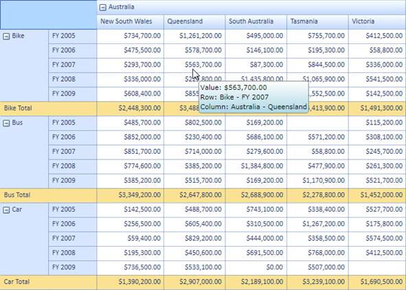
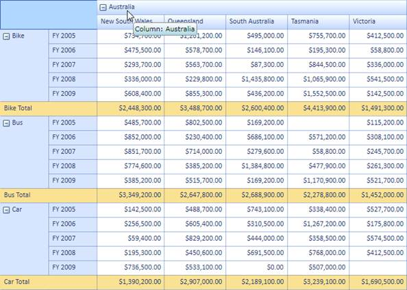
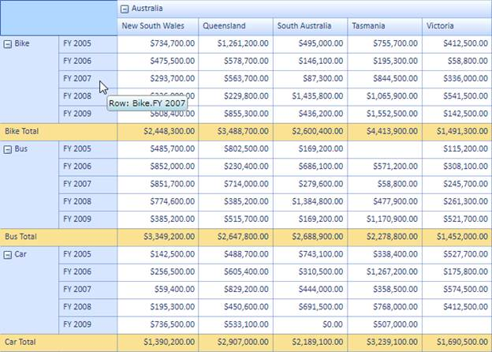
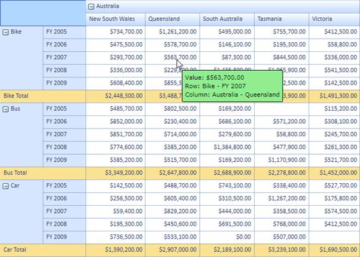
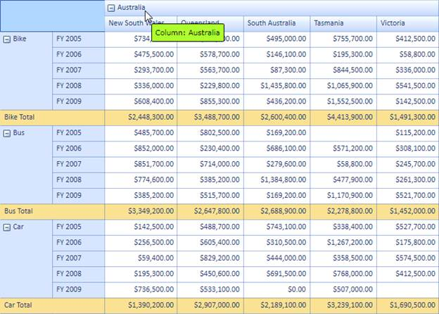

To show ToolTips in the PivotGrid control you need to set the PivotGrid control’s TooltipEnabled property to true. This is the master property which controls all the styles’ ToolTip properties. The following code explains its usage.
|
[C#] //Enable Tooltip for PivotGridControl this.pivotGrid1.ToolTipEnabled = true;
|
|
[VB] //Enable Tooltip for PivotGridControl Me.pivotGrid1.ToolTipEnabled = True
|
You can set the appearance of ToolTips with respect to their styles. Each style has its own ToolTipEnabled property. These properties help to set the appearance individually for each style. The following code explains its implementation.
|
[C#] //Enable Tooltip for RowHeaderCellStyle this.pivotGrid1.RowHeaderCellStyle.ToolTipEnabled = true; //Enable Tooltip for ColumnHeaderCellStyle this.pivotGrid1.ColumnHeaderCellStyle.ToolTipEnabled = true; //Enable Tooltip for ValueCellStyle this.pivotGrid1.ValueCellStyle.ToolTipEnabled = true; //Enable Tooltip for SummaryHeaderStyle this.pivotGrid1.SummaryHeaderStyle.ToolTipEnabled = true; //Enable Tooltip for SummaryCellStyle this.pivotGrid1.SummaryCellStyle.ToolTipEnabled = true; |
|
[VB] //Enable Tooltip for RowHeaderCellStyle Me.pivotGrid1.RowHeaderCellStyle.ToolTipEnabled = True //Enable Tooltip for ColumnHeaderCellStyle Me.pivotGrid1.ColumnHeaderCellStyle.ToolTipEnabled = True //Enable Tooltip for ValueCellStyle Me.pivotGrid1.ValueCellStyle.ToolTipEnabled = True //Enable Tooltip for SummaryHeaderStyle Me.pivotGrid1.SummaryHeaderStyle.ToolTipEnabled = True //Enable Tooltip for SummaryCellStyle Me.pivotGrid1.SummaryCellStyle.ToolTipEnabled = True |

Figure 34: Default ToolTip (Visual Style: Office2007Blue)

Figure 35: ToolTip Shown at Column Header

Figure 36: ToolTip Shown at Row Header
Custom data templates can be set for the PivotGrid control’s ToolTip. To do so, you need to write a data template, bind the style’s Tag property, and set the key to the PivotGrid control’s CustomToolTipTemplateKey property. The following code explains its implementation.
|
[C#] //Set the Custom DataTemplate for PivotGridControl’s Tooltip this.pivotGrid1.CustomToolTipTemplateKey = "CustomTemplateTooltip"; |
|
[VB] //Set the Custom DataTemplate for PivotGridControl’s Tooltip Me.pivotGrid1.CustomToolTipTemplateKey = "CustomTemplateTooltip"
|

Figure 37: Custom ToolTip (Custom DataTemplate)
You can set the data template for ToolTips with respect to their styles. Each style has its own CustomToolTipTemplateKey property. These properties help to set the appearance individually for each style. The following code explains its implementation.
|
[C#] //Set the Custom DataTemplate for ColumnHeaderCellStyle Tooltip this.pivotGrid1.ColumnHeaderCellStyle.CustomToolTipTemplateKey = "ColumnTemplateTooltip"; //Set the Custom DataTemplate for RowHeaderCellStyle Tooltip this.pivotGrid1.RowHeaderCellStyle.CustomToolTipTemplateKey = "RowTemplateTooltip"; //Set the Custom DataTemplate for ValueCellStyle Tooltip this.pivotGrid1.ValueCellStyle.CustomToolTipTemplateKey = "ValueTemplateTooltip"; //Set the Custom DataTemplate for SummaryHeaderStyle Tooltip this.pivotGrid1.SummaryHeaderStyle.CustomToolTipTemplateKey = "SummaryHeaderTemplateTooltip"; //Set the Custom DataTemplate for SummaryCellStyle Tooltip this.pivotGrid1.SummaryCellStyle.CustomToolTipTemplateKey = "SummaryCellTemplateTooltip"; |
|
[VB] //Set the Custom DataTemplate for ColumnHeaderCellStyle Tooltip Me.pivotGrid1.ColumnHeaderCellStyle.CustomToolTipTemplateKey = "ColumnTemplateTooltip" //Set the Custom DataTemplate for RowHeaderCellStyle Tooltip Me.pivotGrid1.RowHeaderCellStyle.CustomToolTipTemplateKey = "RowTemplateTooltip" //Set the Custom DataTemplate for ValueCellStyle Tooltip Me.pivotGrid1.ValueCellStyle.CustomToolTipTemplateKey = "ValueTemplateTooltip" //Set the Custom DataTemplate for SummaryHeaderStyle Tooltip Me.pivotGrid1.SummaryHeaderStyle.CustomToolTipTemplateKey = "SummaryHeaderTemplateTooltip" //Set the Custom DataTemplate for SummaryCellStyle Tooltip Me.pivotGrid1.SummaryCellStyle.CustomToolTipTemplateKey = "SummaryCellTemplateTooltip" |

Figure 38: Custom DataTemplate for ColumnHeaderCellStyle